Colors in R
- use rgb colors using
rgb()function. - use hexadecimal color code e.g. use
"#FFC00"as color. - use clear names (e.g.
"black") listed below.
You can find a nice list of colors at material design color list.
color names in R
color names in R
RColorBrewer package
Provides color schemes for maps (and other graphics) designed by Cynthia Brewer as described at http://colorbrewer2.org.
install.packages("RColorBrewer")
# usage with ggplot2
library("ggplot2")
ggplot(iris, aes(x = Sepal.Length, fill = Species)) +
geom_density(alpha = 0.6) +
scale_fill_brewer(palette = "Set1")
colorspace package
The colorspace package provides a broad toolbox for selecting individual colors or color palettes, manipulating these colors, and employing them in various kinds of visualizations.
install.packages("colorspace")##
## Attaching package: 'colorspace'## The following object is masked from 'package:raster':
##
## RGB# usage with ggplot2
library("ggplot2")
ggplot(iris, aes(x = Sepal.Length, fill = Species)) +
geom_density(alpha = 0.6) +
scale_fill_discrete_qualitative(palette = "Dark 3")ggsci package
ggsci offers a collection of high-quality color palettes inspired by colors used in scientific journals, data visualization libraries, science fiction movies, and TV shows.
install.packages("ggsci")# usage with ggplot2
library("ggplot2")
library("ggsci")
library("gridExtra")##
## Attaching package: 'gridExtra'## The following object is masked from 'package:BiocGenerics':
##
## combine## The following object is masked from 'package:dplyr':
##
## combinep1 = ggplot(subset(diamonds, carat >= 2.2),
aes(x = table, y = price, colour = cut)) +
geom_point(alpha = 0.7) +
geom_smooth(method = "loess", alpha = 0.05, size = 1, span = 1) +
theme_bw()
p2 = ggplot(subset(diamonds, carat > 2.2 & depth > 55 & depth < 70),
aes(x = depth, fill = cut)) +
geom_histogram(colour = "black", binwidth = 1, position = "dodge") +
theme_bw()
p1_npg = p1 + scale_color_npg()
p2_npg = p2 + scale_fill_npg()
grid.arrange(p1_npg, p2_npg, ncol = 2)## `geom_smooth()` using formula 'y ~ x'
paletteer package
The choices of color palettes in R can be quite overwhelming with palettes spread over many packages with many different API’s. This packages aims to collect all color palettes across the R ecosystem under the same package with a streamlined API.
install.packages("paletteer")all continuous palettes
##
## Attaching package: 'pals'## The following objects are masked from 'package:viridis':
##
## cividis, inferno, magma, plasma, turbo, viridis## The following objects are masked from 'package:viridisLite':
##
## cividis, inferno, magma, plasma, turbo, viridis## The following object is masked from 'package:Biostrings':
##
## alphabet


 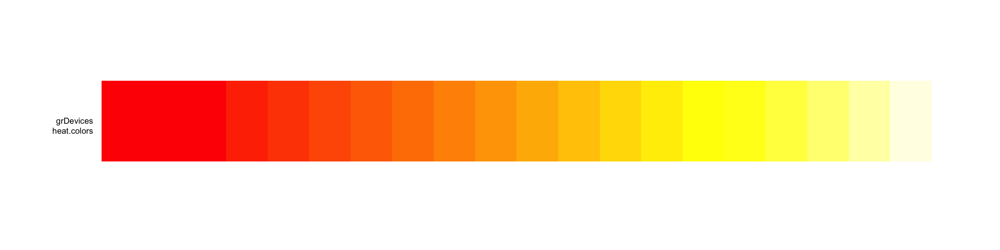
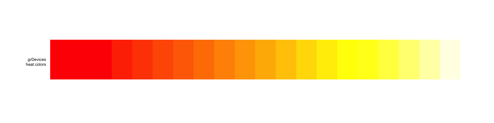 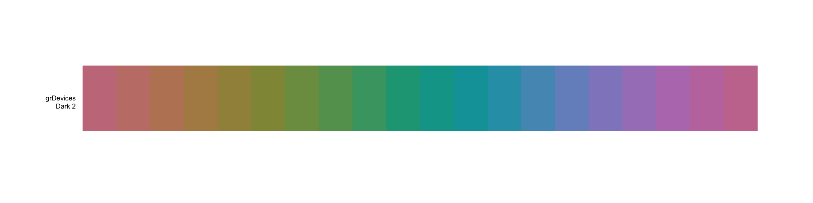
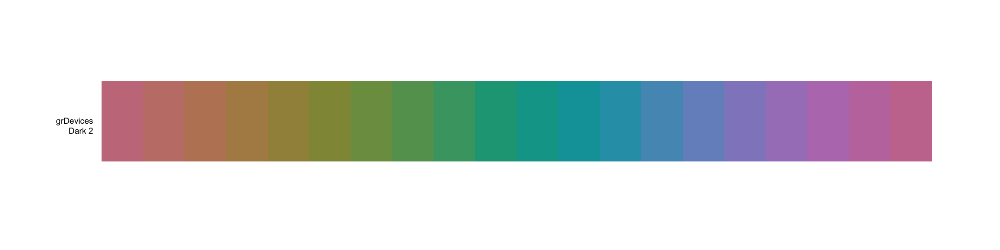


 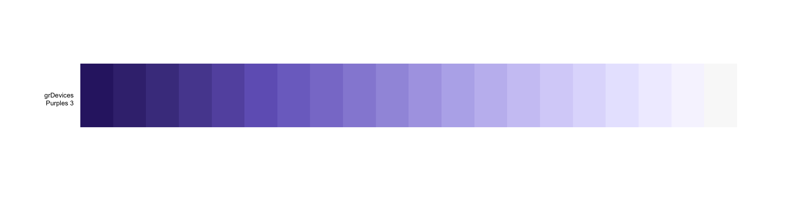
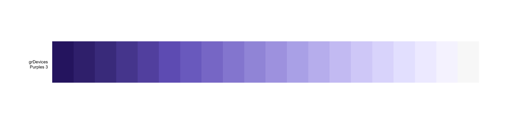


all fixed discrete palettes


 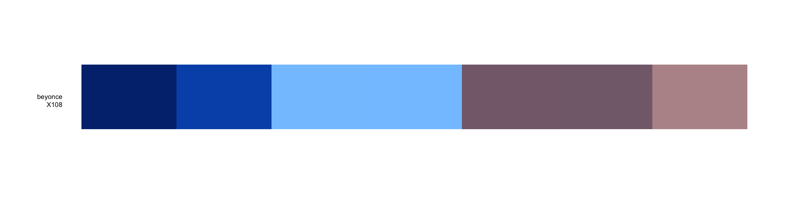
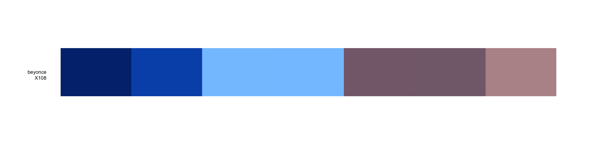


 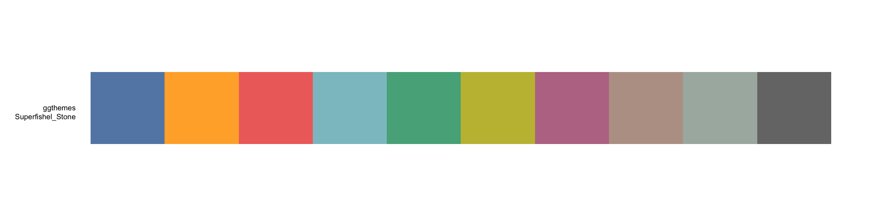
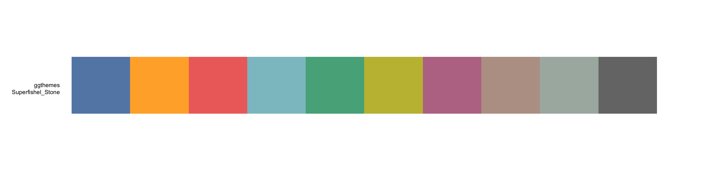


 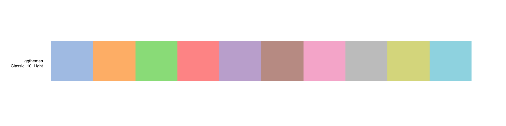
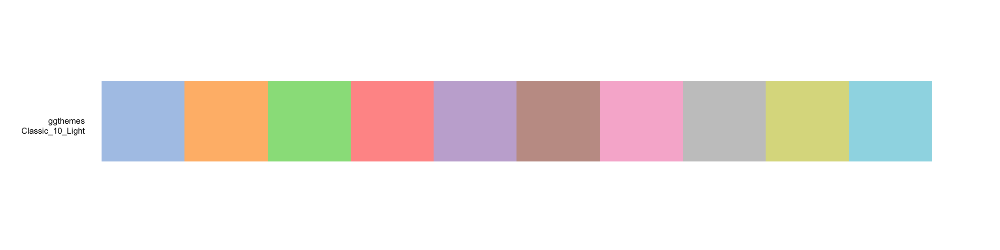


 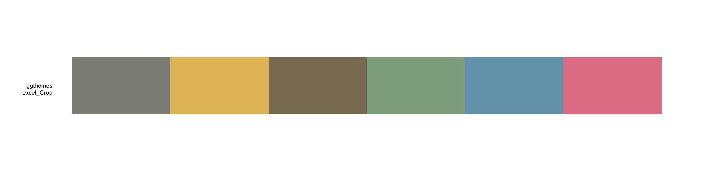
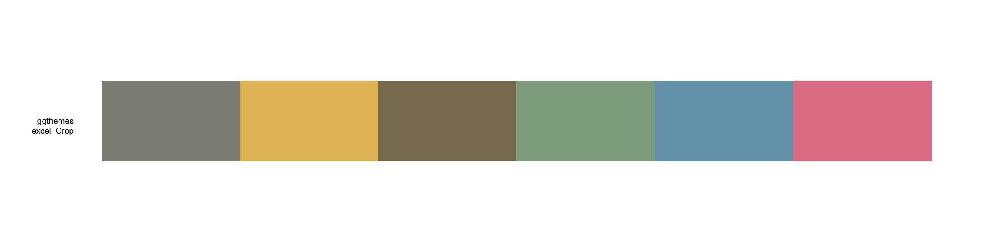


 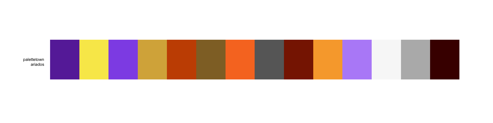
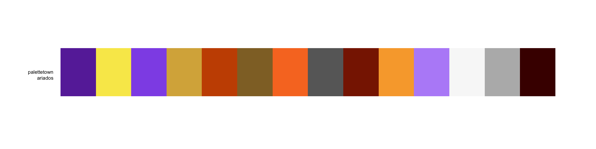
 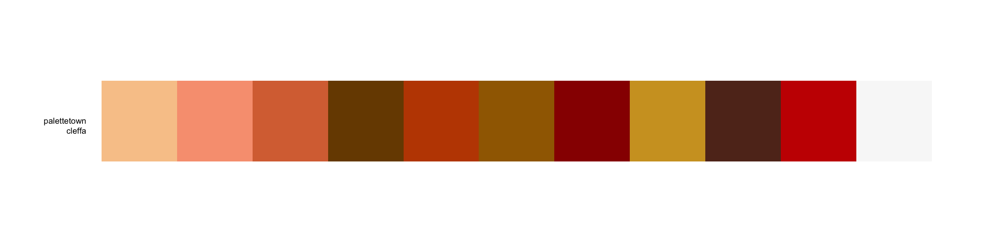
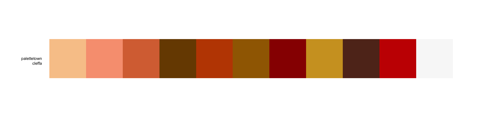


 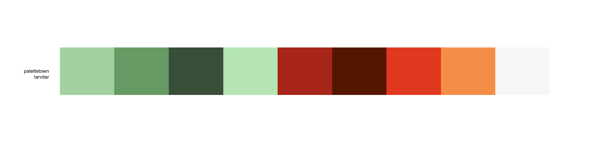
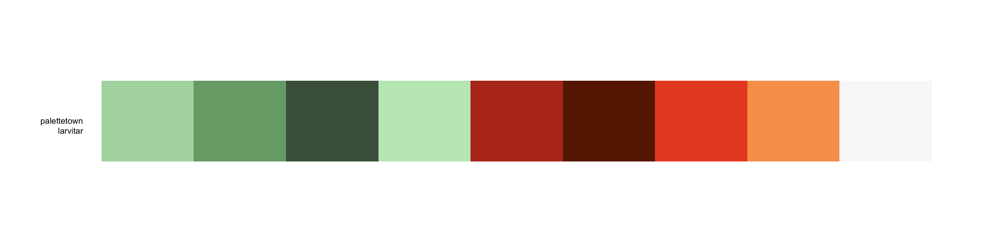


 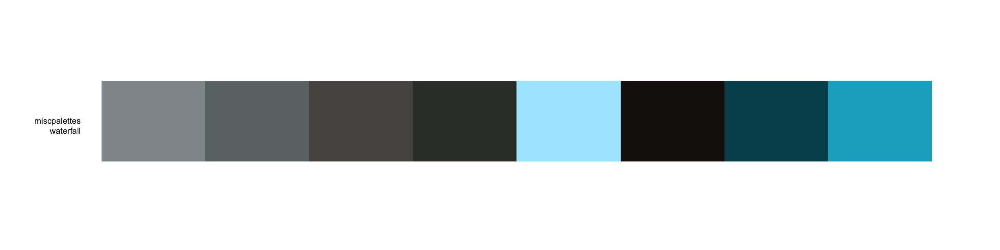
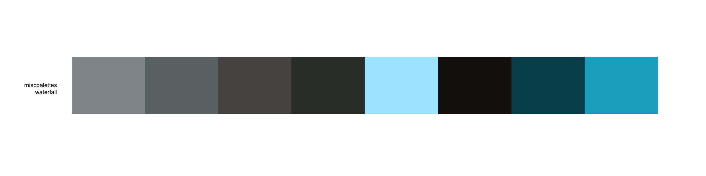


# usage with ggplot2
library("ggplot2")
ggplot(iris, aes(x = Sepal.Length, fill = Species)) +
geom_density(alpha = 0.6) +
scale_fill_paletteer_d(palette = "nord::frost")